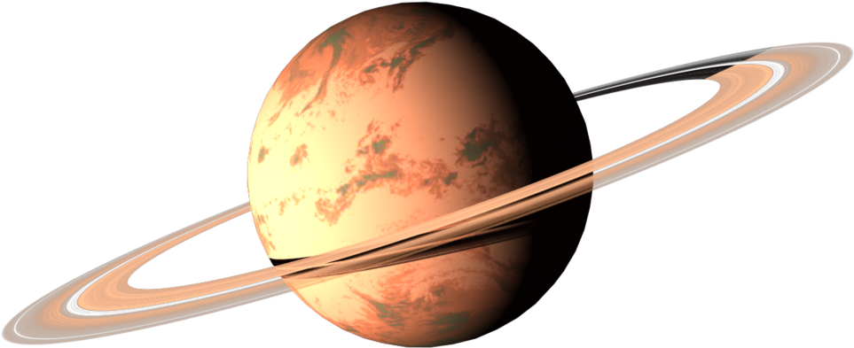

Welcome to
The Solar Sistem Project
About 4.6 billion years ago, a giant cloud of dust and gas known as the solar nebula collapsed in on itself
and began to form what would eventually become our solar system's sun and planets.


- 